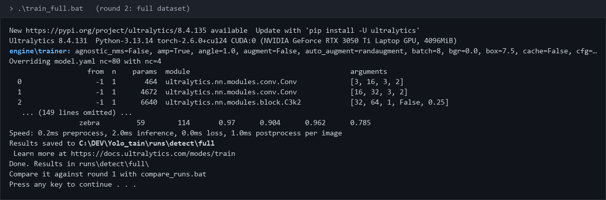
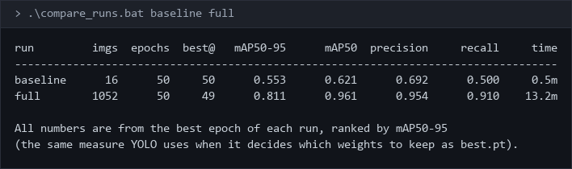
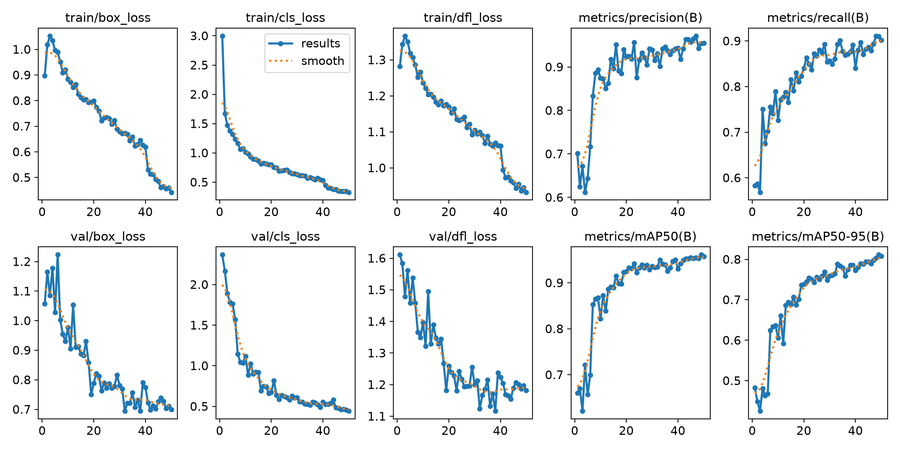
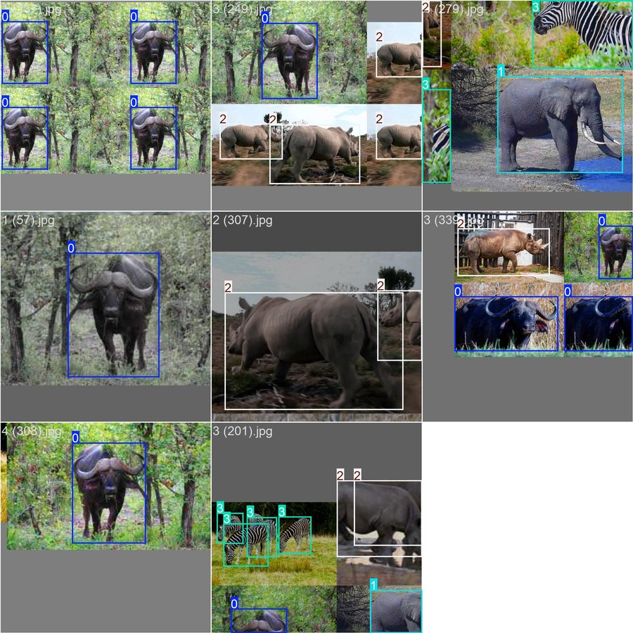

epochs, imgsz, ขนาดโมเดล) แล้วเทียบผลอย่างเป็นระบบรอบที่ 1 กับ 2 ต่างกันแค่จำนวนข้อมูลอย่างเดียว — คลาสเหมือนกัน โมเดลตั้งต้นเหมือนกัน ค่าอื่นเหมือนกันหมด สิ่งที่ได้จึงเป็นคำตอบตรง ๆ ว่าจำนวนข้อมูลมีผลแค่ไหน
cd Lab4_TrainTuning\scripts .\train_baseline.bat
ใช้ Lab3_CustomDataset\dataset\data.yaml ที่ได้จาก Lab 3 (20 รูป แบ่งเป็น train 16 / val 4)
ค่าที่ใช้: model=yolo11n.pt epochs=50 imgsz=640 batch=8 — เทรนเสร็จในไม่กี่นาที
all 4 15 0.689 0.5 0.621 0.553
buffalo 1 1 0.959 1 0.995 0.995
elephant 1 10 0 0 0 0
rhino 1 2 0.798 1 0.995 0.92
zebra 1 2 1 0 0.495 0.297
elephant ให้ดี — ได้ 0 ทุกช่องbuffalo กับ rhino ที่ได้ 0.995 นั้นก็ไม่ได้แปลว่าเก่งจริง — มีตัวอย่างใน val แค่คลาสละ 1-2 ตัว ทายถูกตัวเดียวก็เต็มแล้ว.\train_full.bat
โจทย์เดิม คลาสเดิม ค่าเดิมทุกอย่าง เปลี่ยนแค่ข้อมูลจาก 20 รูปเป็น 1,052 รูป
(ครั้งแรกจะดาวน์โหลด ~100 MB ถ้ายังไม่ได้รัน prefetch.bat จาก Lab 0)

elephant กับรอบแรกที่ได้ 0 ทุกช่อง| คลาส | รอบ 1 (20 รูป) mAP50 | รอบ 2 (1,052 รูป) mAP50 |
|---|---|---|
buffalo | 0.995 (val มี 1 ตัว) | 0.959 (val มี 89 ตัว) |
elephant | 0.000 | 0.953 |
rhino | 0.995 (val มี 2 ตัว) | 0.970 |
zebra | 0.495 | 0.962 |
buffalo ในรอบแรกได้ 0.995 ซึ่งสูงกว่ารอบที่สองที่ได้ 0.959 เสียอีก แต่รอบแรกวัดจากควายตัวเดียว ส่วนรอบสองวัดจาก 89 ตัวInstances ควบคู่ไปด้วยเสมอ.\compare_runs.bat
สคริปต์จะอ่าน results.csv ของทุกรอบใน runs\detect\ แล้วดึงค่าของ epoch ที่ดีที่สุดมาเรียงให้
(ระบุชื่อรอบต่อท้ายได้ถ้าอยากเลือกเฉพาะบางรอบ เช่น .\compare_runs.bat baseline full)

| ตัวชี้วัด | 20 รูป | 1,052 รูป | ดีขึ้น |
|---|---|---|---|
| mAP50-95 | 0.553 | 0.811 | +47% |
| mAP50 | 0.621 | 0.961 | +55% |
| precision | 0.692 | 0.954 | +38% |
| recall | 0.500 | 0.910 | +82% |
| เวลาเทรน | 0.5 นาที | 13.2 นาที | ช้าลง 26 เท่า |

runs\detect\full\results.png — เทียบกับกราฟของ Lab 1 ที่เส้นกระโดดขึ้นลงและ recall แบนราบ รอบนี้ทุกเส้นเรียบและไต่ขึ้นต่อเนื่อง เพราะแต่ละ epoch เห็นข้อมูลมากพอการเพิ่มข้อมูลจาก 20 เป็น 1,052 รูป ทำให้ mAP50-95 ขึ้น 47% โดยไม่ได้แตะค่า hyperparameter สักตัว
ในทางปฏิบัติ การปรับ epochs, imgsz, ขนาดโมเดล มักช่วยได้ในระดับ ไม่กี่เปอร์เซ็นต์ เท่านั้น
เทียบกันแล้วคนละสเกล — ถ้าโมเดลยังไม่ดีพอ คำถามแรกที่ควรถามคือ "ข้อมูลพอหรือยัง" ไม่ใช่ "ปรับค่าอะไรดี"
คุณเพิ่งใช้เวลาราว 20 นาที label 20 รูปใน Lab 3 — ลองคิดดูว่า 1,052 รูปต้องใช้เวลาเท่าไร นั่นคือเหตุผลที่งาน AI จริง ๆ หมดเวลาไปกับการเตรียมข้อมูลมากกว่าการเทรนโมเดลเสมอ
ถ้าโมเดลเห็นภาพชุดเดิมซ้ำ 50 รอบ มันจะเริ่มท่องจำภาพแทนที่จะเรียนรู้ว่าช้างหน้าตาเป็นยังไง YOLO จึงแอบดัดแปลงภาพทุกครั้งก่อนป้อนเข้าไป — เปิดไฟล์ runs\detect\full\train_batch0.jpg ดูสิ่งที่โมเดลเห็นจริง ๆ:

train_batch0.jpg — นี่คือภาพที่โมเดลเห็นจริง ไม่ใช่ภาพต้นฉบับ สังเกตว่าหลายช่องเอา 4 ภาพมาต่อกัน บางภาพถูกพลิกซ้ายขวา บางภาพสีเพี้ยนไป และมีแถบเทาจาก letterbox| เทคนิค | ทำอะไร | สอนโมเดลว่า |
|---|---|---|
mosaic | เอา 4 ภาพมาต่อเป็นภาพเดียว แล้วสุ่มตัด | วัตถุอาจอยู่มุมไหนของภาพก็ได้ ถูกตัดครึ่งก็ยังต้องรู้จัก และอาจมีหลายคลาสในภาพเดียว |
fliplr=0.5 | พลิกซ้าย-ขวา 50% ของภาพ | ช้างหันซ้ายกับหันขวาก็คือช้างเหมือนกัน |
hsv_h/s/v | สุ่มปรับเฉดสี ความอิ่มสี ความสว่าง | ถ่ายตอนเช้า เที่ยง หรือใต้ไฟนีออน ก็ยังต้องตรวจเจอ |
scale, translate | สุ่มย่อขยายและเลื่อนตำแหน่ง | วัตถุอยู่ใกล้หรือไกลกล้องก็ต้องเจอ |
ค่าพวกนี้อยู่ในบรรทัด engine\trainer: ยาว ๆ ที่เห็นตอนเริ่มเทรนทุกครั้ง และ Ultralytics เปิดให้เองโดยไม่ต้องสั่ง
elephant ถึงได้ 0ผลรอบแรกที่ elephant ได้ 0 ทุกช่อง มีชื่อเรียกทางเทคนิคว่าปัญหาข้อมูลไม่สมดุล (class imbalance) — เมื่อคลาสหนึ่งมีตัวอย่างให้เรียนน้อยเกินไปเมื่อเทียบกับคลาสอื่น
ในชุด 20 รูปของ Lab 3 มีวัตถุรวม 39 ชิ้น แบ่งเป็น elephant 15 · zebra 11 · rhino 7 · buffalo 6 ซึ่งดูไม่ได้ห่างกันมาก
แต่ปัญหาอยู่ที่ตอนแบ่ง train/val — ดูบรรทัด elephant ในผลรอบแรกให้ดี จะเห็นว่าคอลัมน์ Instances เป็น 10
elephant 1 10 0 0 0 0
^ ^
val มี 1 ภาพ แต่มีช้างถึง 10 ตัว
ช้าง 10 จาก 15 ตัวไปกองอยู่ในภาพเดียวที่ถูกสุ่มไปเป็น val เหลือให้เรียนในชุด train แค่ 5 ตัว โมเดลจึงเลือกทางที่ "ปลอดภัย" คือไม่ทายช้างเลย เพราะการไม่ทายทำให้ loss ต่ำกว่าการทายผิด
| อาการ | วิธีแก้เรียงตามที่ควรลองก่อน |
|---|---|
| คลาสหนึ่ง mAP ต่ำมากหรือเป็น 0 ขณะที่คลาสอื่นปกติ | 1. เก็บภาพของคลาสนั้นเพิ่ม — ได้ผลที่สุดเสมอ |
2. ตรวจ label ของคลาสนั้นว่าถูกไหม (กลับไปใช้ compare_labels.bat ของ Lab 3 เป็นแนวคิด) | |
| 3. ถ้าเก็บเพิ่มไม่ได้จริง ๆ ค่อยดูเรื่องถ่วงน้ำหนักคลาส ซึ่งซับซ้อนและช่วยได้จำกัด |
ที่ผ่านมาเราเปลี่ยนแค่จำนวนข้อมูลแล้วได้ +47% — ส่วนการปรับ epochs, imgsz, ขนาดโมเดลในงานทั่วไปมักได้เพิ่มระดับ 1-5% เท่านั้น
ไม่ได้แปลว่าไม่ต้องปรับ แต่แปลว่าลำดับความสำคัญควรเป็น: ข้อมูลพอ → label ถูก → ค่อยปรับค่า ถ้าทำสลับลำดับจะเสียเวลามากโดยได้ผลน้อย
train_baseline.bat : yolo detect train data=Lab3_CustomDataset\dataset\data.yaml model=yolo11n.pt epochs=50 imgsz=640 batch=8 name=baseline train_full.bat : yolo detect train data=african-wildlife.yaml model=yolo11n.pt epochs=50 imgsz=640 batch=8 name=full train_custom.bat : yolo detect train data=%DATA% model=%MODEL% epochs=%EPOCHS% imgsz=%IMGSZ% batch=%BATCH% name=%NAME%
| data= | จุดเดียวที่ต่างกันระหว่างรอบ 1 กับรอบ 2 — ที่เหลือเหมือนกันหมด ผลที่ต่างกันจึงมาจากข้อมูลล้วน ๆafrican-wildlife.yaml เป็นชื่อชุดข้อมูลที่มีมากับ Ultralytics ไม่ใช่ไฟล์ในเครื่องเรา ถ้ายังไม่มีมันจะดาวน์โหลดให้เอง |
| name= | ชื่อโฟลเดอร์ผลลัพธ์ใต้ runs\detect\ — ตั้งให้สื่อ จะได้ย้อนดูทีหลังรู้เรื่อง |
| batch=8 | ลดจากค่าเริ่มต้น 16 เพราะการ์ด 4 GB เอาไม่อยู่ที่ imgsz=640 — ถ้าการ์ดใหญ่กว่านี้ปรับขึ้นได้ |
| ไม่มี project= | ตั้งใจไม่ใส่ ถ้าใส่เป็น path แบบ relative ผลลัพธ์จะไปซ้อนกลายเป็น runs\detect\Lab4_TrainTuning\runs\... แล้ว Lab 5-6 จะหาไฟล์ไม่เจอ |
| if not exist %DATA% | เฉพาะ train_baseline.bat — ด่านตรวจว่าทำ Lab 3 มาแล้วจริง ถ้ายังไม่มีจะบอกให้กลับไปทำก่อน แทนที่จะพ่น error ของ Python |
พอมีข้อมูลพอแล้ว การปรับค่าถึงจะเริ่มมีความหมาย ใช้ train_custom.bat ซึ่งรับค่าจากตัวแปรที่ตั้งไว้ก่อนรัน
set EPOCHS=100 set NAME=exp_e100 .\train_custom.bat
NAME ให้สื่อทุกครั้ง — ถ้าเปลี่ยนสามค่าพร้อมกันแล้วผลดีขึ้น จะไม่มีทางรู้ว่าค่าไหนเป็นตัวช่วย และถ้าไม่ตั้งชื่อ โฟลเดอร์จะกลายเป็น exp, exp2, exp3 ที่ดูทีหลังแล้วจำไม่ได้ว่าอันไหนคืออะไร| ตัวแปร | ค่าเริ่มต้น | ผลกระทบ |
|---|---|---|
EPOCHS | 50 | จำนวนรอบที่วนดูข้อมูลทั้งชุด — มากขึ้นมักแม่นขึ้น จนถึงจุดที่เริ่ม overfit (ดูได้จาก val/cls_loss ใน results.png ที่กลับหัวขึ้น) |
IMGSZ | 640 | ขนาดภาพเข้าโมเดล — ใหญ่ขึ้นช่วยเรื่องวัตถุเล็ก แต่กิน VRAM และเวลาเป็นสัดส่วนกำลังสอง (จาก 640 เป็น 1280 = หนักขึ้น ~4 เท่า) |
MODEL | yolo11n.pt | n nano เร็วสุด · s small · m medium แม่นขึ้นแต่หนักขึ้น — สำคัญมากสำหรับ Lab 7-8 ที่ต้องเอาไปรันบน Raspberry Pi |
BATCH | 8 | จำนวนภาพต่อรอบคำนวณ — ใหญ่ขึ้นเทรนนิ่งกว่าแต่กิน VRAM มากขึ้น ตั้งไว้ที่ 8 เพราะการ์ด 4 GB รับ 16 ไม่ไหวเมื่อ imgsz=640 |
DATA | african-wildlife.yaml | ตอนทำโครงงานจริง เปลี่ยนตรงนี้ เป็น path ของ data.yaml กลุ่มตัวเอง ที่เหลือทำเหมือนเดิมทุกอย่าง |
EPOCHS=5 ก่อนทุกครั้งที่เปลี่ยนอะไรใหญ่ ๆ เพื่อดูว่ารันผ่านจริงไหม แล้วค่อยตั้งค่าจริง — ดีกว่ารอ 20 นาทีแล้วมาพังตอนจบรัน .\compare_runs.bat อีกครั้งเมื่อทดลองครบ แล้วจดลงตารางในรายงาน พร้อมตอบคำถามว่า
compare_runs.bat ที่มีทั้งรอบ 20 รูป, รอบชุดเต็ม และรอบปรับค่าอย่างน้อย 2 แบบruns\detect\full\weights\best.pt (หรือรอบที่ดีกว่า) สำหรับใช้ต่อใน Lab 5-8elephant ถึงได้ 0 ในรอบแรก และอะไรทำให้มันดีขึ้น